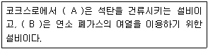
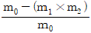
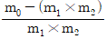
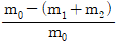
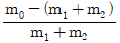
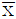

제선기능장 (2017-03-05 기출문제)
1과목: 임의 구분
1. 고로 노정가스 성분 중 CO 29%, CO2 24% 일 때 CO 가스 이용률은 약 얼마인가?(오류 신고가 접수된 문제입니다. 반드시 정답과 해설을 확인하시기 바랍니다.)
- 15%
- 35%
- 45%
- 55%
(정답률: 72%)

2. 미분탄의 연소성에 영향을 미치는 요인이 아닌 것은?
- 열간강도
- 송풍온도
- 미분탄의 입도
- 미분탄의 휘발분
(정답률: 71%)
3. 고로의 풍구주변은 고온이므로 풍구는 수냉을 한다. 풍구의 재질로 옳은 것은?
- 구리
- 주철
- 주강
- 내열강
(정답률: 85%)
4. 소결 성품 회수율 향상을 위한 방법이 아닌 것은?
- 소결광의 파분쇄를 방지한다.
- 고로에서 작은 입도의 소결광을 사용한다.
- 고로 반광 체질 후 소결 상부광으로 사용한다.
- 균일한 입도의 소결광을 위해 크러셔(crusher) 간격을 축소 조정한다.
(정답률: 82%)
5. 광재(slag)의 조성에 대한 설명 중 틀린 것은?
- 보통의 고로 광재에서는 염기도가 높을수록, Al2O3 가 많을수록 융점이 높아진다.
- 광재량이 너무 적으면 탈황률이 저하하거나 조업이 불안정하게 된다.
- 광재 중 Al2O3 양은 점성에 큰 영향을 주어 광재의 분리를 나쁘게 한다.
- 광재 중 MgO 는 유동성을 저하시키고 탈황효과를 나쁘게 한다.
(정답률: 84%)
6. 고로의 입열 항목에 해당되는 것은?
- 용선 현열
- 송풍 현열
- 슬래그 현열
- 노정가스 현열
(정답률: 81%)
7. 고로조업에서 고압조업의 효과로 옳은 것은?
- 연진을 증가시킨다.
- 출선량을 감소시킨다.
- 코크스비를 증가시킨다.
- 노황 불안정에 대한 방지효과가 있다.
(정답률: 81%)
8. 다음 중 소결공정의 순서로 옳은 것은?
- 원료절출 → 혼합 및 조립 → 점화 → 원료장입 → 1차파쇄 및 선별 → 소결 → 냉각 → 2차파쇄 및 선별 → 저장 후 고로장입
- 원료절출 → 혼합 및 조립 → 원료장입 → 점화 → 소결 → 1차파쇄 및 선별 → 냉각 → 2차파쇄 및 선별 → 저장 후 고로장입
- 혼합 및 조립 → 원료절출 → 원료장입 → 점화 → 냉각 → 소결 → 1차파쇄 및 선별 → 2차파쇄 및 선별 → 저장 후 고로장입
- 혼합 및 조립 → 원료장입 → 원료절출 → 소결 → 점화 → 1차파쇄 및 선별 → 냉각 → 2차파쇄 및 선별 → 저장 후 고로장입
(정답률: 85%)
9. 고로 노정 가스 성분 중 CO/CO2 에 대한 설명으로 틀린 것은?
- CO/CO2 의 값이 작을수록 코크스 비가 낮게 된다.
- CO/CO2 의 값은 제강용 선철 제조시에는 약 1.2~1.7정도이다.
- CO/CO2 의 값을 작게 하기 위해서는 광석의 간접 환원율을 낮추어야 한다.
- 코크스의 반응성이 낮을수록 carbon solution이 적어져서 CO/CO2 이 낮아진다.
(정답률: 60%)
10. 고로 조업에서 코크스의 역할에 대한 설명으로 틀린 것은?
- 열원의 역할
- 환원제의 역할
- 슬래그 조성재의 역할
- 고로 내의 통기성 확보 역할
(정답률: 78%)
11. 고로 제철에서 사용되는 용제(flux) 중 염기성 물질이 아닌 것은?
- 규석
- 석회석
- 백운석
- 마그네시아
(정답률: 82%)
12. 코크스 특수제조법 중 비점결탄 또는 약점결탄을 주원료로 하며 냉간 또는 열간에서 석탄을 가압 제조한 후 고온에서 코크스화하는 방법은?
- 배소법
- 오일링법
- 스템핑법
- 성형 코크스법
(정답률: 88%)
13. 장입물이 용해해서 미환원의 철, 규소 등이 직접 환원되는 부분이며, 장입물의 용적 축소와 강하 속도를 낮추어 반응이 충분히 이루어 지도록 하기 위해 원뿔형으로 되어 있는 부분은?
- 노구
- 노복
- 노상
- 보시
(정답률: 85%)
14. 코렉스(corex) 공정에서 장입되는 괴광의 철광석과 부원료가 상승 중인 고온 환원성 가스와 접촉하는 설비는?
- 용융 가스화로
- 샤프트형 환원로
- 멜팅 스테이지(melting stage)
- 히팅 스테이지(heating stage)
(정답률: 82%)
15. 고로 내 장입물 분포제어 기술의 3개 기능과 관계없는 것은?
- 통기성
- 열교환
- 소결성
- 환원반응
(정답률: 76%)
16. 야드 설비 중 하역설비가 아닌 것은?
- Unloader
- Stacker
- Reclaimer
- Train Hopper
(정답률: 84%)
17. 다음 설명에서 A, B 각각에 들어갈 말로 알맞은 것은?

- A: 축열실, B: 연소실
- A: 연소실, B: 축열실
- A: 탄화실, B: 연소실
- A: 탄화실, B: 축열실
(정답률: 83%)
18. 고로 장입 철광석 중 피환원성이 양호한 조건을 가진 철광석의 성질은?
- 기공률이 높고, 산화도와 입도가 작고, Fayalite가 적을 것
- 기공률, 산화도가 높고, 입도가 작고, Fayalite가 적을 것
- 기공률, 산화도가 높고, 입도가 작고, Ilmenite가 많을 것
- 기공률, 입도가 높고, 산화도가 낮고, Ilmenite가 많을 것
(정답률: 78%)
19. 코크스로의 소비열량 감소방법이 아닌 것은?
- 압출 시간을 증가시킨다.
- Flue 온도가 균일하게 분포되도록 한다.
- 돌발 감산방지로 작업을 균일화시킨다.
- 장입량을 균일화하고, 내부는 평형 장입시킨다.
(정답률: 86%)
20. 믹서(MIXER)에서 소결원료에 수분을 첨가하는 목적으로 틀린 것은?
- 미분조립에 의하여 소결층 내 통기성을 향상시킨다.
- 소결층 내의 온도구배를 개선하여 열효율을 높여준다.
- 소결 주배가스 온도를 상승시켜 현열 회수량을 높여준다.
- 건조대 직하에 수분포화 습윤대를 만들어 더스트(dust)를 흡착시켜 줌으로써 더스트 비산을 방지한다.
(정답률: 72%)
2과목: 임의 구분
21. 샤프트 직접환원로용 철광석-저온 환원지수 및 금속화도 측정(KSE ISO 11257)에서 환원분해 지수(RDI)를 구하는 식으로 옳은 것은? (단, m0: 체가름된 환원된 시험재료의 질량[gl] (분진채집기안에 모아진 재료 포함), m1: 10mm 체로 보유된 환원 시험시료 양[g], m2: 3.15mm 체로 보유된 환원 시험시료 양[g]이다.)




(정답률: 78%)
22. 고로 내 황(S)의 성분을 낮추는 방법으로 틀린 것은?
- 광석량을 줄인다.
- 송풍습도를 낮춘다.
- 송풍량을 감하여 조업속도를 떨어뜨린다.
- 석회석 양을 줄이고 염기도를 낮춘다.
(정답률: 80%)
23. 원료의 부족 또는 설비상 사고로 1개월 이상 휴지하고 문제를 해결한 다음 조업에 들어갈 수 있게 하는 작업은?
- 종풍
- 소화
- 휴풍
- 뱅킹
(정답률: 85%)
24. 고로에서 가스 청정설비가 아닌 것은?
- 권양기
- 전기집진기
- 제진기(Dust Catcher)
- 벤츄리 스크러비(Venturi Scrubber)
(정답률: 91%)
25. 축류 송풍기에 대한 설명으로 옳은 것은?
- 저속회전에 적합하다.
- 설치 면적이 크고 비용이 많이 든다.
- 풍압 변동에 대한 정풍량 운전이 용이하다.
- 터보 송풍기에 비하여 압축된 유체의 통로가 단순하고 길다.
(정답률: 85%)
26. 풍구손상이 발생하였을 때 나타나는 현상이 아닌 것은?
- 풍구 주변부의 누수
- 냉입 사고의 발생률 감소
- 노정가스 중의 수소함량 급상승
- 풍구 냉각배수 중의 노 내 가스 혼입
(정답률: 84%)
27. 분쇄입도에 영향을 주는 요인과 석탄에 관해 설명한 것 중 옳은 것은?
- H.G.I 가 작으면 파쇄하기 어렵다.
- 수분이 많으면 파쇄하기 쉽다.
- 휘탄부는 파쇄하기 어렵고, 암탄부는 쉽다.
- 분쇄 전 석탄입도가 크면 분쇄 후 입도는 작다.
(정답률: 75%)
28. 코크스의 건류온도가 일정할 때 탄화시간이 가장 긴 것은?
- 노폭 350mm
- 노폭 400mm
- 노폭 450mm
- 노폭 500mm
(정답률: 86%)
29. 고로 내벽의 내화제 구비조건이 아닌 것은?
- 마모에 강할 것
- 열전도율이 클 것
- 화학적 부식에 강할 것
- 고온에서 상당한 내압력을 가질 것
(정답률: 92%)
30. 고로에서 장입물 강하가 일시 정지되는 걸림 현상 중 고로하부 걸림 현상과 관련 있는 것은?
- 장입물 분포불량
- 환원분화성이 높음
- 용융물의 점성이 높음
- 분율이 높은 코크스 장입
(정답률: 75%)
31. 철광석의 특성 및 화학적 성질에 대한 설명으로 틀린 것은?
- 노 내에서 환원하지 않는 성분으로는 Na2O, K2O 등이 있다.
- 철광석의 평가기준은 TㆍFe 함량이 높고 불순물이 적어야 한다.
- Al2O3 는 유동성이나 용융성에 큰 영향을 주기 때문에 약 15% 이내로 하는 것이 좋다.
- Zn 은 노 내에서 증발하여 노벽을 보호하므로 많은 양을 첨가하여 사용한다.
(정답률: 86%)
32. 고로의 설비 관리 중 열량 부족 시 나타나는 현상이 아닌 것은?
- S 의 함유량이 증가한다.
- 슬래그의 염기도가 저하한다.
- 용선 중의 Si 및 Ti가 증가한다.
- 용선 및 슬래그의 유동성이 저하한다.
(정답률: 71%)
33. 다음 중 펠리트(pellet)의 소성방식이 아닌 것은?
- Bucket 식
- Grate kiln 식
- Shaft furnace 식
- Traveling grate 식
(정답률: 81%)
34. 흑체로부터의 복사신 가운데 가시 광선만을 이용하는 온도계는?
- 광고온계
- 저항 온도계
- 방사 온도계
- 팽창 온도계
(정답률: 87%)
35. 슬립(slip)이나 걸림(hanging)을 방지하기 위한 방법이 아닌 것은?
- 분광을 다량 중심부에 장입한다.
- 장입물의 입도분포를 균일화한다.
- 분코크스(cokes)의 장입을 피한다.
- 열균열성 광석이나 점착성 광석의 장입량을 감소시킨다.
(정답률: 82%)
36. 고로 내 반응으로 간접환원 반응에 해당하는 것은?
- 3Fe2O3 + C ⇆ 2Fe3O4 + CO
- Fe3O4 + CO ⇆ 3FeO + CO2
- Fe3O4 + C ⇆ 3FeO + CO
- FeO + C ⇆ Fe + CO
(정답률: 71%)
37. 선광법 중 미분상의 두 가지 다른 광물을 수중에서 기포에 부착시켜 분리하는 방법은?
- 수세 선광법
- 자력 선광법
- 부유 선광법
- 팽창 선광법
(정답률: 85%)
38. 고로에서 장입물의 변화 상황 중 침탄(가탄)층의 온도로 적합한 것은?
- 200 ~ 500℃
- 500 ~ 800℃
- 800 ~ 1200℃
- 1200 ~ 1500℃
(정답률: 79%)
39. 고로의 내용적을 옳게 설명한 것은?
- 풍구 수준면에서 장입기준선까지의 용적이다.
- 풍구 수준면에서 노구상단까지의 용적이다.
- 노저에서 장입기준선까지의 용적이다.
- 노저에서 상단까지의 용적이다.
(정답률: 62%)
40. 코크스 제조과정 중 화락 시간에 영향을 미치는 요인이 아닌 것은?
- 장입탄량
- 장입탄의 수분
- 공급 가스의 열량
- 장입탄의 TI(Total Inerts)
(정답률: 82%)
3과목: 임의 구분
41. 고로 장입설비 중 two bell type에 구성되어 있는 것이 아닌 것은?
- 스키머
- 선회 슈트
- 균배압 장치
- 벨 개폐장치
(정답률: 86%)
42. 고로에서의 송풍은 출선량과 선철의 품질을 좌우하는 중요한 인자가 된다. 복합 송풍과 관계 없는 것은?
- 고온 송풍
- 연료취입
- 조습 송풍
- 산소부화 송풍
(정답률: 75%)
43. 워크 샘플링에 관한 설명 중 틀린 것은?
- 워크 샘플링은 일명 스냅리딩(Snap Reading)이라 불린다.
- 워크 샘플링은 스톱워치를 사용하여 관측대상을 순간적으로 관측하는 것이다.
- 워크 샘플링은 영국의 통계학자 L.H.C.Tippet가 가동률 조사를 위해 창안한 것이다.
- 워크 샘플링은 사람의 상태나 기계의 가동상태 및 작업의 종류 등을 순간적으로 관측하는 것이다.
(정답률: 77%)
44. 설비배치 및 개선의 목적을 설명한 내용으로 가장 관계가 먼 것은?
- 재공품의 증가
- 설비투자 최소화
- 이동거리의 감소
- 작업자 부하 평준화
(정답률: 81%)
45. 부적합품률이 20%인 공정에서 생산되는 제품을 매시간 10개씩 샘플링 검사하여 공정을 관리하려고 한다. 이 때 측정되는 시료의 부적합품 수에 대한 기대값과 분산을 약 얼마인가?
- 기대값: 1.6, 분산: 1.3
- 기대값: 1.6, 분산: 1.6
- 기대값: 2.0, 분산: 1.3
- 기대값: 2.0, 분산: 1.6
(정답률: 67%)
46. 검사의 종류 중 검사공정에 의한 분류에 해당되지 않는 것은?
- 수입검사
- 출하검사
- 출장검사
- 공정검사
(정답률: 88%)
47. 설비보전조직 중 지역보전(area maintenance)의 장ㆍ단점에 해당하지 않는 것은?
- 현장 왕복 시간이 증가한다.
- 조업요원과 지역보전요원과의 관계가 밀접해진다.
- 보전요원이 현장에 있으므로 생산 본위가 되며 생산의욕을 가진다.
- 같은 사람이 같은 설비를 담당하므로 설비를 잘 알며 충분한 서비스를 할 수 있다.
(정답률: 88%)
48. 3?법의

관리도에서 공정이 관리상태에 있는데도 불구하고 관리상태가 아니라고 판정하는 제1종 과오는 약 몇 %인가?- 0.27
- 0.54
- 1.0
- 1.2
(정답률: 61%)
49. 다음 중 순철에 대한 설명으로 틀린 것은?
- 순철의 종류로는 전해철, 카보닐철, 암코철 등이 있다.
- 순철은 전연성이 풍부하며, 전기재료로도 사용된다.
- 순철의 변태는 동소변태(A3, A4)와 약 210℃ 부근의 자기변태(Ao)가 있다.
- 순철의 동소체로는 α-철(체심입장격자), γ-철(면심입장격자), δ-철(체심입방격자)이 있다.
(정답률: 81%)
50. 열탄성계수가 좋아 고급시계, 정밀저울 등의 스프링 및 정밀기계부품에 사용되는 불변강은?
- 엘린바
- 두랄루민
- 고망간강
- 하이드로 날륨
(정답률: 80%)
51. 다음의 금속 중 비중이 가장 작은 것은?
- Mg
- Sn
- Ni
- Au
(정답률: 82%)
52. 0.3% 탄소강의 723℃ 직상에서의 초석 α의 양과 펄라이트 양은 각각 약 몇 % 인가? (단, 공석점은 0.8%C, α의 C 고용한계는 0.025% 이다.)
- α = 64.5, 펄라이트 = 35.5
- α = 35.5, 펄라이트 = 64.5
- α = 77, 펄라이트 = 23
- α = 23, 펄라이트 = 77
(정답률: 60%)
53. 황동에서 자연균열을 방지하기 위한 대책으로 옳은 것은?
- 수은 및 그 화합물과 함께 보관한다.
- 암모니아나 탄산가스 분위기에서 보관한다.
- 가공재를 185~260℃에서 응력제거풀림 한다.
- α+β 황동 및 β 황동에 Mn 또는 Cr 등을 첨가한다.
(정답률: 77%)
54. 면심입방격자(FCC)를 갖는 금속이 아닌 것은?
- Cr
- Ag
- Ni
- Al
(정답률: 69%)
55. 탄소강에 함유된 H2 가스가 강에 미치는 영향으로 옳은 것은?
- 페라이트 중에 고용되고 적열취성이 원인이 된다.
- 실온에서 충격치를 저하시켜 상온취성의 원인이 된다.
- 페라이트 중에 고용되고 석출하여 강도, 경도를 증가시킨다.
- 강을 여리게 하고 산이나 알칼리에 약하며, 백점(flakes)이나 헤어크랙(hair crack)의 원인이 된다.
(정답률: 79%)
56. 위험예지훈련에서 활용하는 브레인스토밍(Brain Storming)의 4원칙이 아닌 것은?
- 비판 금지
- 대량 발언
- 수정발언 금지
- 자유분방한 발언
(정답률: 88%)
57. 사업주가 상시 분진 작업에 관련된 업무에 근로자를 종사하도록 하는 경우 알려야 하는 사항이 아닌 것은?
- 작업장 및 개인위생 관리
- 분진의 입자크기와 연소범위
- 호흡용 보호구의 사용 방법
- 분진의 발산 방지와 작업장의 환기 방법
(정답률: 84%)
58. 시스템의 출력을 입력단에 되돌려 기준입력과 비교하여 그 오차가 감소되도록 동작시키는 방식은?
- 플랜트(Plant)
- 서보 시스템(Servo system)
- 개루프 제어(Open loop control)
- 되먹임 제어(Feedback control)
(정답률: 89%)
59. 전기 회로 중 AND회로에 대한 설명으로 옳은 것은?
- 입력이 여러 개 있을 때, 입력 접점의 신호 어느 하나만 들어오면 출력 측이 동작하게 되는 회로
- 입력이 여러 개 있을 때, 여러 개의 입력 접점 신호가 모두 들어와야만 출력이 나타나는 회로
- 입력 측에 전압이 가해지면 바로 출력 측에 신호가 나타나지 않고, 일정시간이 지나야 출력 신호가 나타나는 회로
- 출려과 입력이 서로 반대되는 회로로 입력이 ON 이면 출력은 OFF, 입력이 OFF 이면 출력은 ON 이 되는 부정회로
(정답률: 88%)
60. 자동제어계의 요소에 일정 진폭으로 사인파상으로 변화하는 입력을 넣고, 이에 대한 출력의 진폭과 위상의 편차를 조사함으로써 요소의 성질을 알 수 있는 방법은?
- 상태공간법
- 위상평면법
- 주파수응답법
- 공정속도분석법
(정답률: 83%)